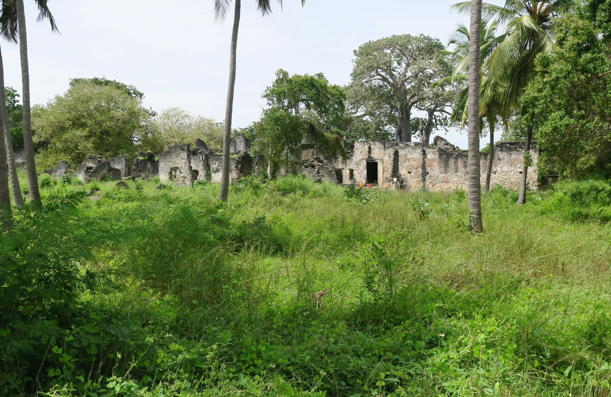
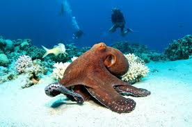

Zanzibar, Pemba and the historic Kilwa coast - Tanzania's spice islands and Swahili heritage on the Indian Ocean.
From UNESCO Stone Town and clove-scented Pemba to the medieval ruins of Kilwa Kisiwani, this region pairs culture, beach and diving with easy access from Dar es Salaam.
Main Islands

Kilwa & Swahili Coast
Kilwa
The Matandu River is the largest river running west to east of Kilwa district.

Kilwa Kisiwani
From the 9th century all the way up until the 19th century, Kilwa Kisiwani was a wealthy and powerful port,

Kilwa Kivinje
Kilwa Kivinje is now a small atmospheric village with a Swahili village feel and an intriguing mix of German…

Songo Mnara
Songo Mnara was an offshoot of the older and larger city of Kilwa Kisiwani,
Stone Town Day Trips
Safari Packages

Day Trip to Chemka Hot Springs
From $638 / person
Chemka Hot Springs are an oasis in the hinterland of the Kilimanjaro region, . Located in 1-hour drive from Moshi town. Chemka Hot Springs is the best place to visit after a Kilima
View Itinerary
Day Trip to Lake Duluti
From $638 / person
Lake Duluti is a small crater lake situated in eastern Arusha. Lake Duluti Day trip, It takes approximately 20 minutes from Arusha City. Lake Duluti is surrounded by a thick forest
View Itinerary
Day Trip to Materuni Waterfalls and Coffee Tour
From $638 / person
Around 30 - 40 minutes outside of Moshi town are Materuni waterfalls. As this trip is so close by and ideal for those people with limited time but who would still like to see some
View Itinerary
Day Trip to Olmoti and Empakai Crater in Ngorongoro Highlands
From $638 / person
This day trip will take you to the diverse landscapes of the Ngorongoro Crater Highland, mainly Olmoti and Empakai Crater.
View Itinerary
5 Days Zanzibar Beach Holiday
From $1,450 / person
Stone Town culture, spice farms and Indian Ocean beach relaxation - the perfect post-safari unwind.
View Itinerary
Chumbe Island Coral Park
Price on request
Chumbe Island Coral Park Ltd. (CHICOP) is an award-winning private nature reserve that was developed from 1991 for the conservation and sustainable management of uninhabited Chumbe
View Itinerary
Deep Sea Fishing in Zanzibar
Price on request
Zanzibar is fortunate in having superb fishing almost all the year. Fishing in Zanzibar is synonymous as some of the most exhilarating and challenging deep-sea fishing is available
View Itinerary
Dhow Sunset Cruise
Price on request
Sit back, relax and sink into the soft pillows decorating the dhow taking you on a gentle cruise along the Unguja coast and around Stone Town. While a setting sun turns the sky int
View Itinerary
Dolphin Tour, Zanzibar
Price on request
Kizimkazi Zanzibar Dolphin Tour offers you the experience of a lifetime, a chance to swim with dolphins in their natural habitat. The seashore of the fishing village Kizimkazi is t
View Itinerary
Galanos Hot Sulphur Springs Tours, Tanga
Price on request
Galanos Hot Sulphur Springs is about 12km on the way to Mombasa from Tanga city. The spring is still active bobbling from the earth and flowing to form a stream along to the Ziggi
View Itinerary
Gangilonga Stone, Iringa
Price on request
The Gangilonga Stone is another historical and cultural landmark located in Gangilonga Ward, Iringa, Tanzania and it’s believed to have been in its current location for over 600 ye
View Itinerary
Jozani Chwaka Bay National Park
Price on request
Jozani Forest is the largest area of nature forest on Zanzibar Island. Situated south of Chwaka Bay about 40 km from Stone Town on low-lying land, the area is prone to flooding, wh
View Itinerary
Kalenga Historical Museum
Price on request
A small museum in nearby Kalenga - the former Hehe capital - contains the skull, personal effects and other relics of Chief Mkwawa. It was here that he committed suicide rather tha
View Itinerary
Kiwengwa Cave, Zanzibar
Price on request
The Kiwengwa caves were officially discovered in 2002, although the islanders of the area have used them for hundreds of years. Located just 20 km on the East Coast of Unguja from
View Itinerary
Lake Maliwe, Kilwa
Price on request
Maliwe is a peaceful lake where a few fishermen can take you on canoes dugout from a single log to observe the wildlife. Hippos and crocodiles can easily be seen, wide colonies of
View Itinerary
Magoroto Forest Estate
Price on request
Magoroto Forest Estate in East Usambara Mountains with its tropical rain forest is the perfect spot for a getaway. The estate is located on an altitude of 850m above sea level wher
View Itinerary
Mkurukara Caves, Kilwa
Price on request
Mkurukara means “leader “, it was used as a shelter by a leader and his followers. There are 2 caves, one that served as a shelter, and the other that supplied fresh water. This wa
View Itinerary
Mwanakiwambi, Kilwa
Price on request
This is an archeological site that has not yet been conserved. It is therefore difficult to interpret the wall remains but the ruins are very close to the water shore. In this part
View Itinerary
Namaingo Caves, Kilwa
Price on request
The Namaingo caves are interesting to visit for their network of organic corridors leading to different rooms, rivers and water reservoirs. The cave is sometimes used as well in th
View Itinerary
Nandembo Caves, Kilwa
Price on request
Nandembo Caves in Kilwa can be seen around Nandembo village. We recommend avoiding walking through Nangoma cave to stay away from the huge colony of bats. But the entrance with its
View Itinerary
Nungwi Experience
Price on request
Nungwi, Matemwe and Kendwa are the name of the villages at the north-east part of Zanzibar Island. This part of the trip mainly focuses on snorkeling experience at Mnemba Atoll and
View Itinerary
Pandawe Malalani, Kilwa
Price on request
It is said that in this area, Unji Bin Unuki, a very tall person, sank in the mud. This legend is supported by a series of stones that represent his kitchen and footprints carved i
View Itinerary
Prison Island, Zanzibar
Price on request
The Prison Island, also known as Changuu Island which is located on the western part of Zanzibar Island, just off Stone Town and bordering three islands namely Grave Island, Snake
View Itinerary
Rukila Island, Kilwa
Price on request
An Island in Kilwa, the southern coast of Tanzania houses the highest levels of coral and fish biodiversity in the region. Snorkeling or scuba diving on a coral reef is unforgettab
View Itinerary
Safari Blue, Zanzibar
Price on request
Safari Blue trip is a full day sailing around mangroves and snorkeling along Menai bay, which is one of the best coral reefs in Zanzibar. Main activities on this day are visiting K
View Itinerary
Scuba Diving in Zanzibar
Price on request
Zanzibar scuba experience offers a chance to dive in the best corals in East Africa, Diving in Zanzibar is renowned for its stunning beaches and unspoiled village life in areas lik
View Itinerary
Slave Trade Tour
Price on request
This is a guided excursion that will take you back to the 16th century when Zanzibar was a commercial empire. The Slave Trade Tour in Zanzibar will help you trace our history back
View Itinerary
Spice Tour, Zanzibar
Price on request
On this excursion you'll find tropical fruits, spices and other rare species of plants are among the different vegetation. The Spice Tour in Zanzibar is not only an excursion but a
View Itinerary
Stone Town Tour
Price on request
The stone town tour, the city tour, takes you around the capital town to experience historically, culturally and architecturally richness of Zanzibar Islands. The tour takes 2 to 3
View Itinerary
Tongoni Ruins, Tanga
Price on request
Tongoni Ruins are situated 21km South of Tanga City along Tanga - Pangani road. The Ruins are surrounded with baobab trees and stand of Mangroves along the Indian Ocean. The ruins
View Itinerary
Tung’ande Cave, Kilwa
Price on request
This cave is well ventilated and easy to visit without using artificial light. The various rooms exhibit amazing shapes created by stalactites and stalagmites, including an elephan
View ItineraryReady to explore the Zanzibar?
Request a Quote